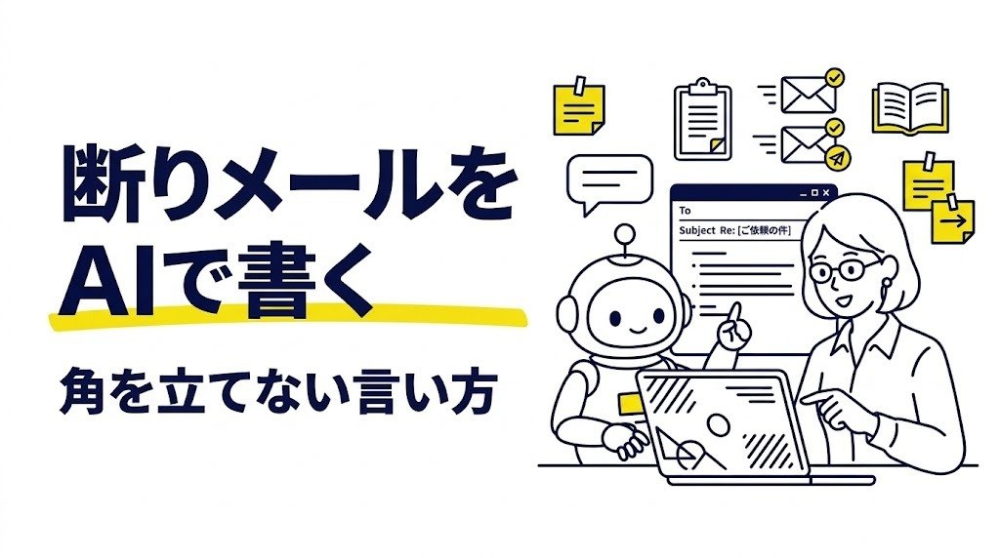

断りのメールを角を立てずに書くプロンプト｜依頼・誘い・営業に使える

断りのメールは、書き出しから言葉選びまで迷うことが多く、送るまでに時間がかかりがちです。
AIに状況を伝えれば、丁寧さと分かりやすさのバランスがとれた下書きを作ってもらえます。
この記事では、ChatGPT・Claude・Geminiなどで使える、角を立てずに断るためのプロンプトを紹介します。
角を立てない断りメールの基本構成
AIに頼む前に、断りメールの基本的な流れを押さえておくと、出てきた下書きの良し悪しを判断しやすくなります。一般的には、次のような順番で書くと相手に受け入れられやすいとされています。
- 連絡や依頼へのお礼
- 結論（お引き受けできないこと）をはっきり伝える
- 差し支えのない範囲での理由
- お詫びの言葉
- 代わりの提案や、今後につながる一言
大切なのは、結論をぼかしすぎないことです。遠回しすぎると「まだ可能性があるのかな」と相手に誤解され、かえって手間をかけてしまいます。AIへのプロンプトでも「断ることがはっきり伝わるように」と指示しておきましょう。
そのまま使える基本の断りメールプロンプト
まずは、どんな場面にも使える基本形です。【 】の部分を自分の状況に合わせて書き換えてください。
相手との関係：【例：取引先の担当者／社内の先輩／友人】
断る内容：【例：来月の新規案件の依頼】
断る理由（書いてよい範囲）：【例：現在の案件で手一杯のため】
代わりに提案できること：【例：再来月以降なら相談可能／なし】
条件：お礼→結論→理由→お詫び→今後の一言の順で書く／断ることがはっきり伝わるようにする／件名も提案する／300字程度
丁寧さの度合いを変えた案を2パターン出してください。
2パターン出してもらうと、言い回しを比べながら選べるので、自分の感覚に近い文面を見つけやすくなります。
場面別のアレンジプロンプト
営業や勧誘をやんわり断る
今後の連絡を控えてほしいときは、その意図を明確にすることがポイントです。
条件：感謝を一言添える／検討の結果見送ることを明記する／今後のご連絡は不要である旨をやわらかく伝える／200字程度
受け取ったメールの要点：【相手の社名や個人名を伏せて要点を書く】
飲み会やイベントの誘いを断る
社内や知人からの誘いは、関係を大切にしたい気持ちを伝えることが大切です。
誘ってくれたことへの感謝と、また機会があれば参加したい気持ちが伝わる短いメッセージを作ってください。
チャットで送る想定で、かしこまりすぎない文体にしてください。
一度引き受けたことを断り直す
いったん引き受けたあとに事情が変わり、断らなければならなくなることもあります。この場合は、通常の断りよりもお詫びと今後の対応を丁寧に伝える必要があります。
相手：【例：取引先の担当者】
条件：最初にお詫びを書く／事情を簡潔に説明する／相手が困らないように、自分ができる対応（例：引き継ぎ資料の用意）を書く／言い訳がましくならないようにする
丁寧さの異なる2案を作ってください。
このような連絡は、メールだけで済ませず、電話や対面で直接伝えたほうがよい場合もあります。相手との関係や内容の重さに応じて、伝え方そのものも検討しましょう。
うまくいかないときの直し方
AIの下書きがしっくりこないときは、どこが気になるのかを具体的に伝えて書き直してもらいましょう。
| 気になる点 | 追加で伝える指示の例 |
|---|---|
| 言い訳が長く感じる | 「理由は1文に短くしてください」 |
| 冷たい印象がある | 「感謝とお詫びの表現をもう少し丁寧にしてください」 |
| 断っているのか曖昧 | 「お引き受けできないことを2文目で明確に書いてください」 |
| かしこまりすぎ | 「社内の同僚向けに、少しくだけた丁寧語にしてください」 |
| 長すぎる | 「全体を150字以内にしてください」 |
また、AIが「別の担当者をご紹介します」「来月なら対応できます」など、自分が伝えていない約束を書き足してしまうことがあります。代替案は自分が本当に実行できる内容かどうかを必ず確認し、できない約束は削除してください。
理由についても注意が必要です。AIは自然な文章にするために理由を膨らませることがありますが、事実と違う理由を書くと後で困るのは自分です。事実に基づいた内容かを確かめてから送りましょう。
送る前に確認したいこと
断りのメールは、送ったあとに取り消すことが難しい文章です。次の点を見直してから送信しましょう。
- 相手の名前・社名・敬称が正しいか（AIへの入力時に伏せた部分を戻し忘れていないか）
- 日付や案件名などの事実関係が合っているか
- 自分の言葉づかいとして不自然な表現がないか
- 社内で共有が必要な内容なら、先に上司などに相談したか
AIに入力するときは、相手の個人名・連絡先・取引条件などの機密情報や個人情報はそのまま貼り付けず、「A社」「担当者様」のように置き換えて使うのが安心です。入力内容の扱いはサービスや設定によって異なるため、勤務先のルールも確認しておきましょう（執筆時点）。
英語で断る必要がある場合は、英語のメールを書くプロンプトも参考にしてください。
まとめ
断りのメールをAIに手伝ってもらうときは、「誰に・何を・なぜ断るのか」と「断ることを明確に伝える」という条件をしっかり渡すことがポイントです。
- お礼→結論→理由→お詫び→今後の一言、という基本構成を指定する
- 丁寧さを変えた複数案を出してもらい、自分に合う文面を選ぶ
- 書き足された約束や理由は事実かどうかを確認し、最後は自分の言葉で整える
気の重い連絡も、下書きがあるだけでぐっと取りかかりやすくなります。次に断りの連絡が必要になったときに、ぜひ試してみてください。
気になったプロンプトを1つコピーして、今日の用事で1回だけ試してみませんか。空欄を埋めて送るだけで始められます。
あなたなら、何をAIに頼んでみますか？
最後まで読んでくださり、ありがとうございました。